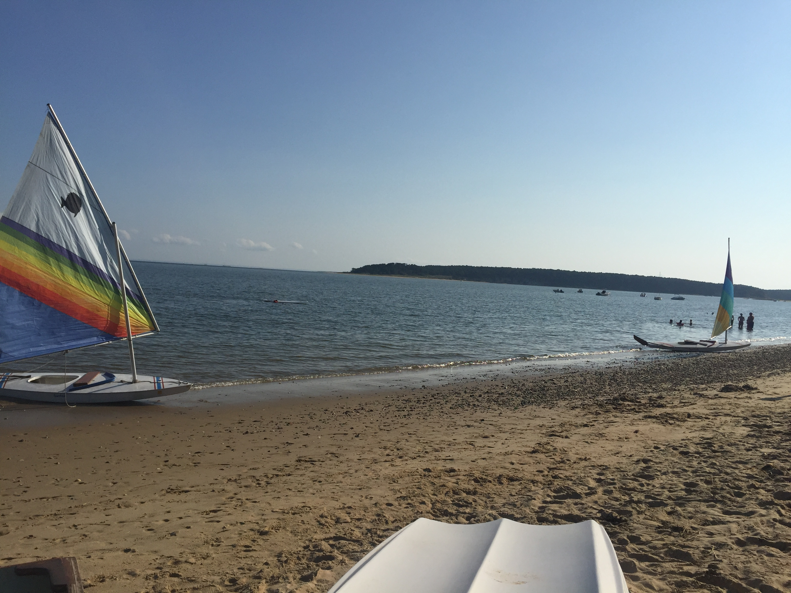
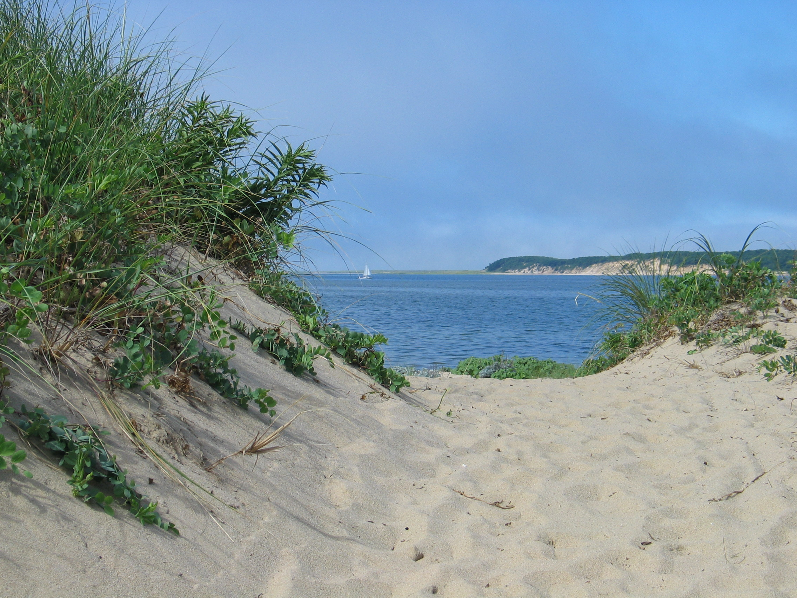

Two Wellfleet Bays: A Comparison
Indian Neck

- This bay has a large parking lot that rarely fills.
- There's a rock jetty towards the right side of the beach, fun for children to climb.
- There is a public bathroom located towards the bottom of the parking lot.
- Indian Neck has lots of beach grass, making it feel much more wild.
- This beach faces Great Island, a remote penninsula accessible by boat or, at low tide, the Great Island trail. See information about boat rentals here.
Mayo Beach

- Mayo Beach's parking lot is smaller than Indian Neck's but is located close to other parking lots if full.
- Mayo is closer to town, meaning there is much more foot traffic.
- Mayo is located next to the pier, where there are many spots to get lunch, dinner, or an ice cream. Mac's On the Pier,see here, serves the famous Wellfleet oysters.
- This beach has an outdoor concert series in the summers. See more information about "Music at Mayo" here.


Resources

Ponds

Beaches

Home

Info